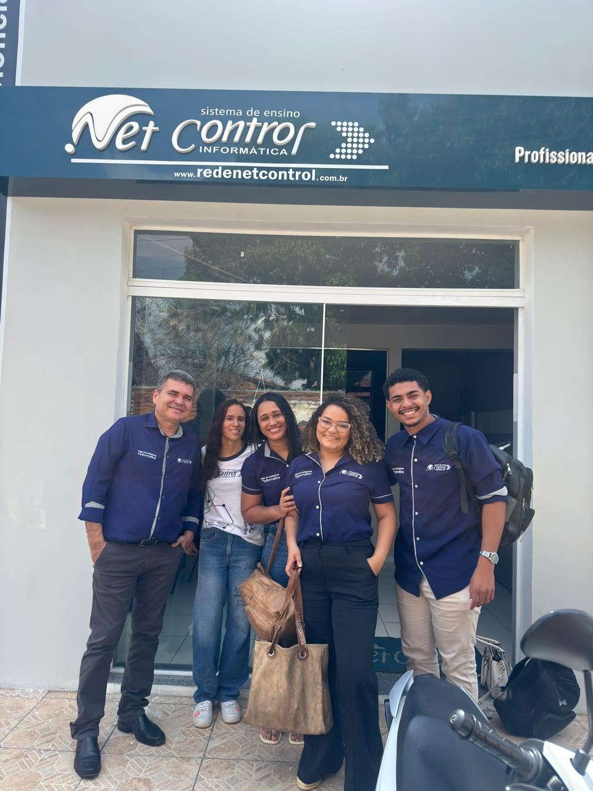
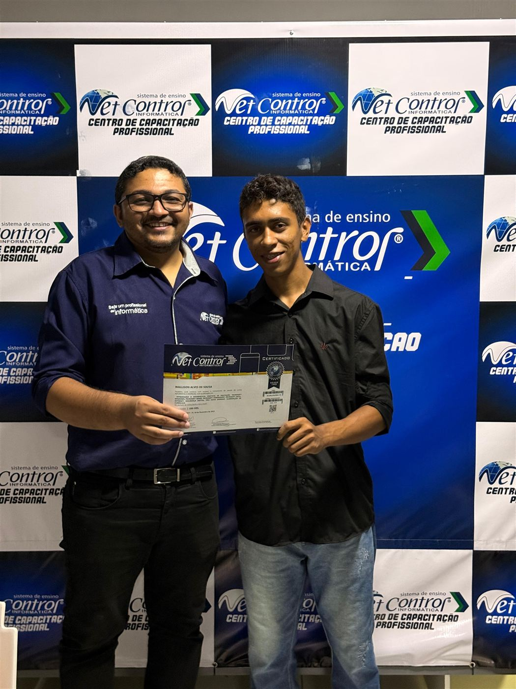
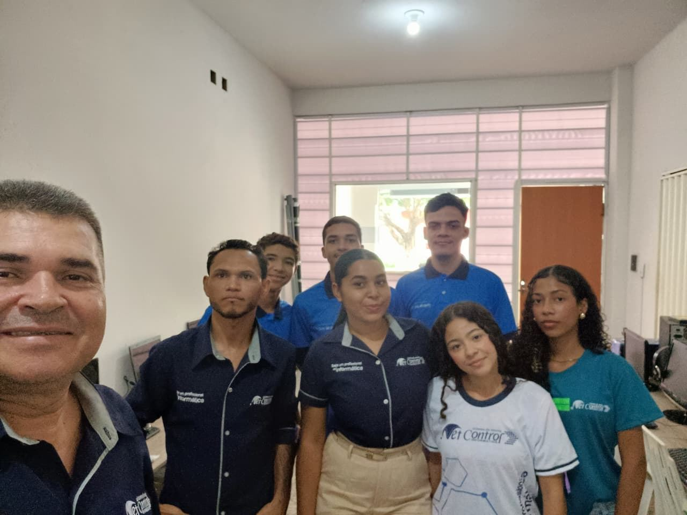
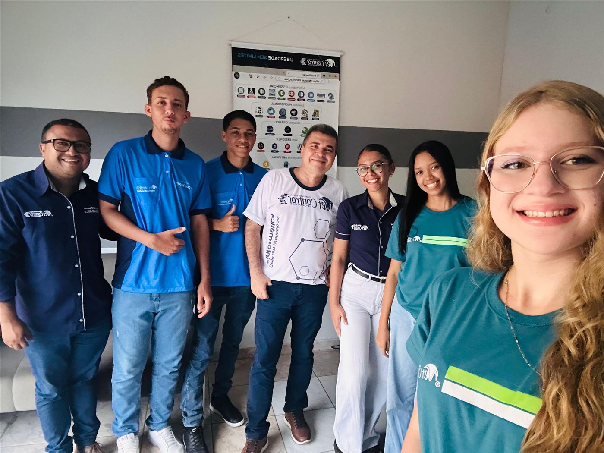

★★★★★
“Fiz Informática Essencial e Excel Avançado na Net Control. O método é direto ao ponto, cada um no seu computador. Menos de dois meses depois da formatura, fui contratado no setor financeiro de uma grande empresa em Floriano!”
Veja os momentos reais de entrega de certificados, formaturas solenes e a trajetória dos alunos do Programa Aluno Aprendiz nos 27 anos de história da Net Control.
Cada foto representa meses de dedicação, superação e a alegria de conquistar uma formação profissional de peso reconhecida no mercado. Clique nas fotos para ampliar e navegar pela galeria.




A transformação profissional na voz de quem vivenciou a metodologia prática da Net Control no Piauí, Bahia e Maranhão.
“Fiz Informática Essencial e Excel Avançado na Net Control. O método é direto ao ponto, cada um no seu computador. Menos de dois meses depois da formatura, fui contratado no setor financeiro de uma grande empresa em Floriano!”
“Fui aluna do curso de Assistente Administrativo e tive a honra de participar do Programa Aluno Aprendiz. Essa vivência prática na escola me deu postura, comunicação e me abriu portas diretas para o mercado corporativo!”
“Comecei sem saber nada de computador e hoje trabalho como Designer Gráfico criando peças publicitárias e sites para lojas da região. A Net Control mudou a minha perspectiva de vida e aumentou muito a minha renda familiar!”
Do aprendizado em sala à primeira grande oportunidade profissional. Jovens talentos que vivenciam a rotina da escola e se destacam no comércio e nas empresas da região.
O Programa Aluno Aprendiz foi concebido para fechar a lacuna que muitas vezes separa a sala de aula do mercado de trabalho. Selecionamos estudantes dedicados para acompanhar o atendimento, suporte técnico aos colegas e rotinas administrativas sob a tutoria próxima dos nossos coordenadores.
Durante o programa, o aluno desenvolve postura profissional, ética corporativa, desinibição ao falar em público e agilidade na resolução de problemas práticos. Esse conjunto de competências transforma o currículo do jovem e abre portas imediatas nas empresas parceiras da região.
Aluno demonstra disciplina, dedicação, pontualidade e facilidade de absorção do conteúdo técnico.
Acompanha o dia a dia pedagógico, suporte aos laboratórios, atendimento e rotinas empresariais reais.
Treinamentos especiais de comunicação, oratória, ética corporativa e preparação para processos seletivos.
Indicação qualificada para as principais empresas parceiras do comércio, indústria e serviços da região.




Mais de 20.000 pessoas já transformaram suas vidas e carreiras nos 27 anos de história da Net Control Informática. Chegou a sua vez de dar o próximo passo rumo ao sucesso profissional.